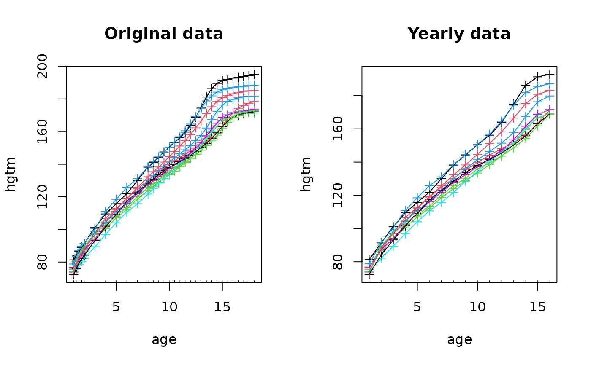

Function to truncate time in functional data
Value
A list with the data containing all variables of the original dataset
with the variables of funVar truncated according to newtime.
Examples
if(require(fda)){
dat <- fda::growth
dat$hgtm <- t(dat$hgtm[,1:10])
dat$hgtf <- t(dat$hgtf[,1:10])
## only use time-points 1:16 of variable age
datTr <- truncateTime(funVar=c("hgtm","hgtf"), time="age", newtime=1:16, data=dat)
# \donttest{
oldpar <- par(mfrow=c(1,2))
with(dat, funplot(age, hgtm, main="Original data"))
with(datTr, funplot(age, hgtm, main="Yearly data"))
par(mfrow=c(1,1))
par(oldpar)
# }
}
